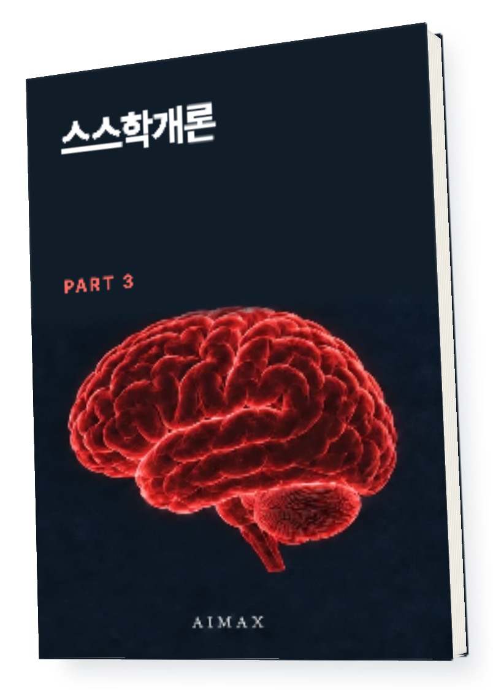
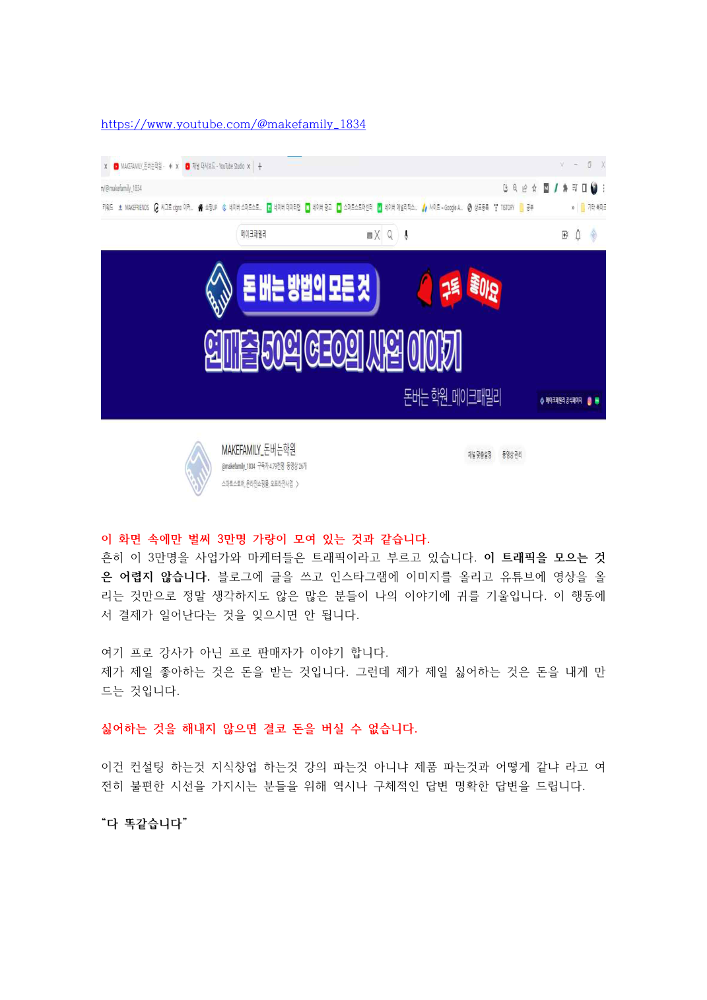
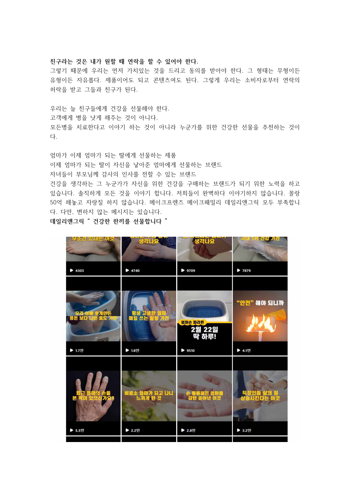

이 비지니스 설계법으로50억 벌었습니다
내 주제와 고객을 하나의 사업으로

무엇을 팔고 누구에게 말하고
어떤 채널로 만날 것인가.
흩어진 선택을 내 사업의 구조로 연결하세요.
이 책이 필요한 순간
할 일은 많은데
사업의 그림이 안 잡힌다면
제품, 콘텐츠, 채널을 따로 생각하면 다음 선택이 어렵습니다. 이 책은 주제와 고객을 정하고 실제 사례에 대입하며 사업을 구체화하는 과정을 다룹니다.
책 속에서 먼저 확인하세요
주제와 고객을 정한 뒤
실제 사례에 대입합니다
원문에는 저자가 운영한 채널과 제품 사례가 담겨 있습니다. 사례의 제품을 내 제품으로 바꿔 생각하며 읽어보세요.


제공된 원문에서 가져온 본문 자료입니다.
이 책에서 다루는 것
주제·고객·채널을 잇는 사업 설계
나의 주제
지속해서 이야기할 주제와 사업의 방향을 정합니다.
고객의 정의
내 사업과 만날 사람, 그 사람이 원하는 것을 짚습니다.
사업의 구체화
제품과 채널 사례를 보며 실제 행동으로 옮길 순서를 살핍니다.
구조의 연결
PART 1·2에서 다룬 제품과 고객 모으기를 하나의 사업으로 잇습니다.
내 일에 적용하기
내 제품을 넣고
사업의 연결을 그려보세요
주제
계속 다룰 분야와 판매할 제품을 적습니다.
고객
그 제품이 필요한 사람과 이유를 정합니다.
연결
고객을 만날 채널과 전할 이야기를 잇습니다.
내 주제는 [주제], 제품은 [제품], 고객은 [고객]입니다. 첨부한 책을 참고해 주제·고객·채널이 어떻게 연결되는지 정리해주세요. 아직 결정하지 못한 부분은 질문으로 남겨주세요.
활용 예시입니다. AI의 답은 원문과 내 상황에 맞는지 확인하세요.읽고 보관하고 다시 꺼내 쓰세요
전자책과 지식 파일을
함께 받습니다
편하게 읽는 전자책
컴퓨터와 모바일에서
본문을 읽는 파일입니다.
내 자료로 쓰는 지식 파일
압축을 풀어 Obsidian에서 열거나
AI에 참고 자료로 넣어보세요.
지식 파일은 Obsidian/AI용 자료입니다.
AI가 자동 실행되거나 내용을 영구 학습하는 프로그램은 아닙니다.
결제 후 이렇게 받으세요
구매 이메일로 온 메일에서
자료 받기를 누르세요.
로그인 없이 14일 동안,
파일당 3회 다운로드할 수 있습니다.
다시 받을 때는 같은 구매 이메일로
라운지에서 재다운로드하세요.
이런 분께 권합니다
- 제품과 홍보 채널을 하나의 구조로 연결하고 싶은 분
- PART 1·2를 읽고 내 사업에 적용할 순서를 찾는 분
종이책이 배송되나요?
종이책 배송 없이 PDF와 지식 파일 ZIP을 받는 디지털 상품입니다.
AI나 Obsidian을 꼭 써야 하나요?
PDF만 읽어도 됩니다. 지식 파일은 책을 보관하거나 AI에 참고 자료로 넣고 싶을 때 활용하세요.
구매하면 같은 성과를 얻나요?
이 책은 원문의 방법과 경험을 담은 자료입니다. 적용 방식과 사업 상황에 따라 결과는 달라집니다.
다음 선택에 참고할 한 권
스스학개론 PART 3
주제·고객·채널을 잇는 사업 설계
구매 이메일을 정확히 입력해주세요.